Configuring Triggering on IBM MQ for z/OS
Audience level
Some knowledge of MQ, z/OS, and CICS
Skillset
MQ Administration
Background
The purpose of this lab is to provide a hands-on introduction to MQ triggering. Triggering can be used to:
- Automatically start a channel when messages arrive on its transmission queue
- Automatically start a CICS transaction to process messages on a queue
This lab demonstrates the second use case by using a simple example CICS program called QCOPY. The QCOPY program is executed from the QCPY transaction. When the required triggering conditions are met, QCPY is started automatically to move messages from one queue to another in MQ and apply a message property to each message.
Lab overview
This lab has three parts:
I. Defining MQ objects for triggering
II. Configuring CICS components
III. Testing the solution
In parts I and II, you will configure the MQ and CICS objects required for triggering. In part III, you will test the end-to-end flow.
By the end of this lab, you should understand how MQ triggering with CICS is configured so you can adapt the pattern to your own use cases.
This sample requires a currently supported version of IBM MQ and CICS. If you are using the MQPLEX lab environment, the COBOL source for the QCOPY program is available in ZQS1.COBOL.SOURCE. If you need access to a lab sysplex, contact the Worldwide Systems Center or your IBM technical sales contact.
Prerequisites
Before you begin, make sure the following are available:
- A running queue manager, for example
ZQS1 - A CICS region that is configured to work with MQ
- Access to the MQ web console, MQ Explorer, or MQSC through PCOMM
- Authority to define MQ objects and access the required CICS transactions
- The
QCOPYsample program andQCPYtransaction installed in the target CICS region - A working MQ-CICS connection and the ability to start the CICS trigger monitor (
CKTI)
Note: This lab assumes the objects are created on queue manager
ZQS1. If you use a different queue manager, substitute that name consistently throughout the lab.
Procedure
I. Defining MQ objects for triggering
-
Navigate to the MQ web console. You can also use MQ Explorer or MQSC commands through PCOMM if preferred.
-
Create the following five local queues. Use the screenshots to guide the parameter settings.
QCPY.CONTROL
This queue contains the trigger message used to start the QCPY transaction. For QCPY, the message payload contains, in comma-delimited format, the number of messages to copy, the source queue, and the target queue.
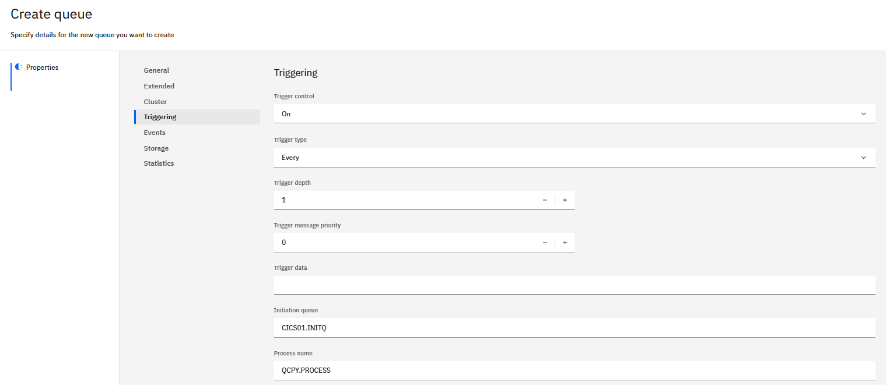
QCPY.INPUT
The source queue for the messages to be copied.
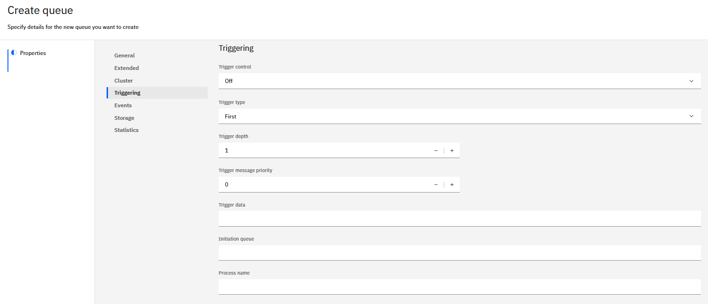
QCPY.OUTPUT
The target queue for the copied messages.
QCPY.STATUS
The queue that receives status messages indicating success or failure.
CICS.INITQ
The initiation queue used to connect CICS to MQ for triggering.
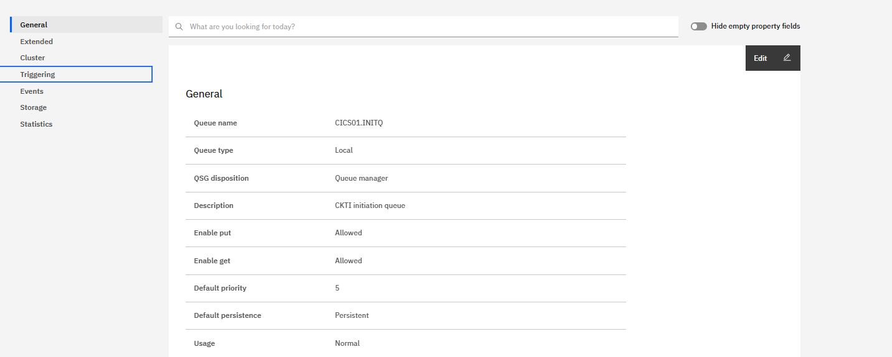
-
Next, navigate to the
MQS1PCOMM session. -
From the ISPF main menu, navigate to SDSF.
-
Define a process using the MQSC command shown in the screenshot below. A process is an MQ object that identifies an application to the queue manager. MQ uses the process definition to identify the CICS application,
QCPY, that should be started by the trigger monitor. -
Specify
CICSas the application type - Specify
QCPYas the application ID; this is the CICS transaction name - Use the environment data to identify the status queue, which reports the result of processing
QCPY.PROCESS
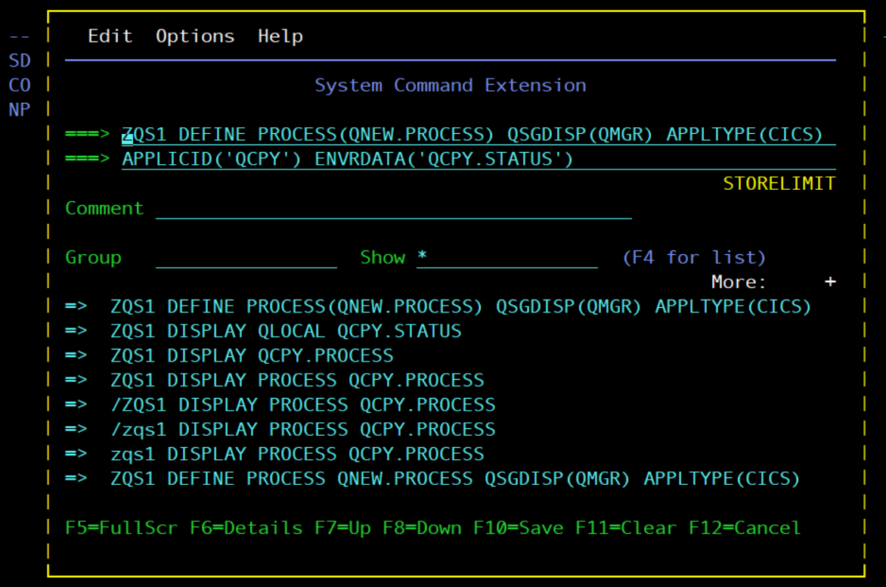
II. Configuring CICS components
-
Ensure that CICS is running. You can verify this from SDSF.
-
In SDSF, enter
DAto display active address spaces. -
Set the prefix to
*by entering:
PREFIX *
Then use F7 and F8 to look for the active CICS region. You should see something similar to the following:
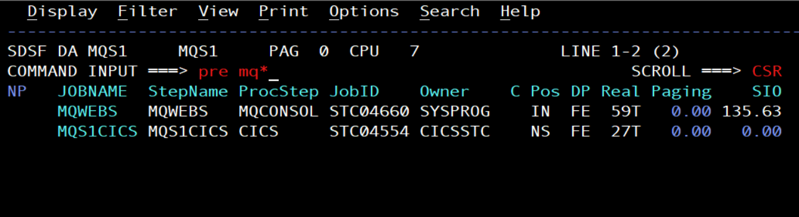
- If no CICS region is active, start it with:
START MQS1CICS
-
Once you have confirmed that CICS is running, start another
MQS1PCOMM session. From the main screen, enterMQS1CICSand press Enter.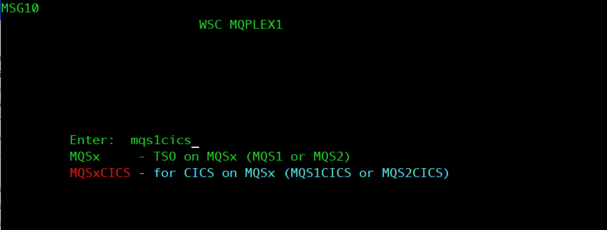
-
From the CICS main screen, press Tab once and type
CKQC. This is the MQ CICS transaction used to monitor and control the interface between MQ and CICS. -
If no trigger monitor is active, you will need to add a listener for
CICS.INITQ. From the CICS screen, navigate toCKQCM0by typing the command.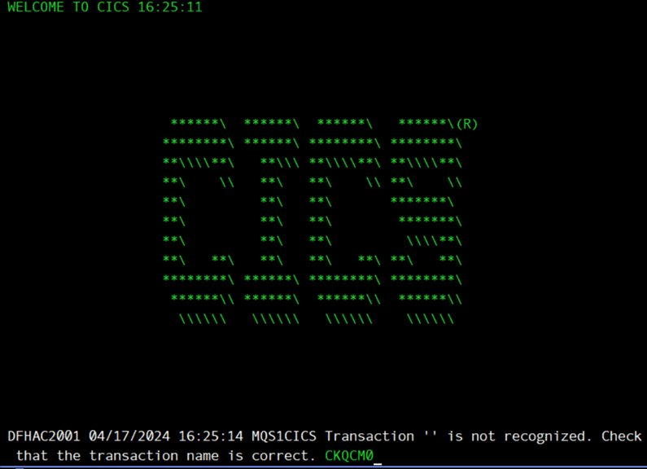
-
The following screen should appear:
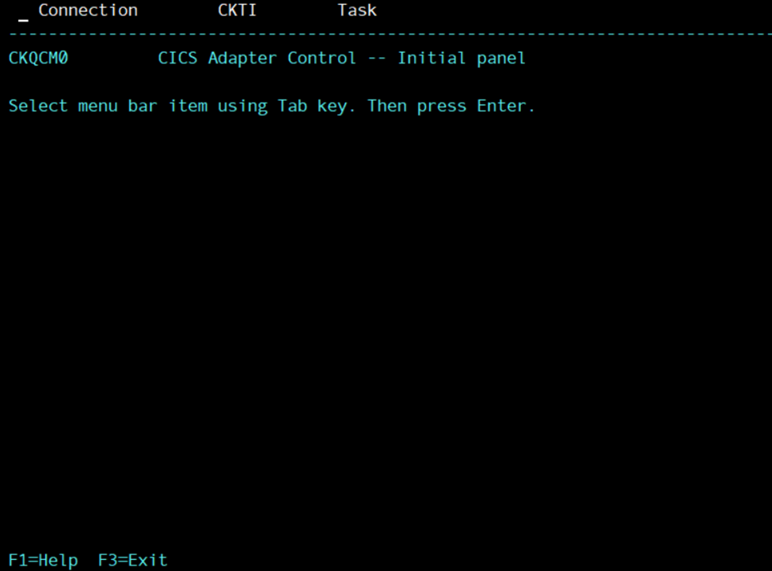
-
Move the cursor to the Connection option, then press Enter. When the menu appears, type option
1and press Enter.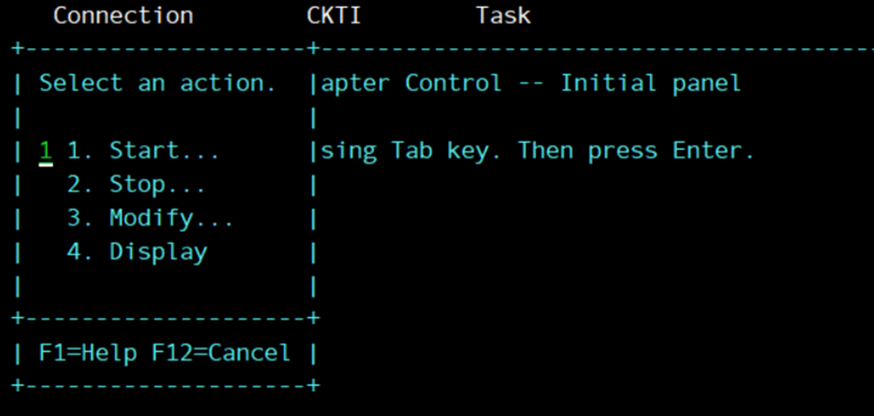
-
Enter the appropriate queue manager name and initiation queue name, then press Enter.
-
Press
F12to return to the main menu. Move the cursor to the CKTI option and press Enter. When the menu appears, type option1and press Enter. -
Enter the appropriate initiation queue name and press Enter.
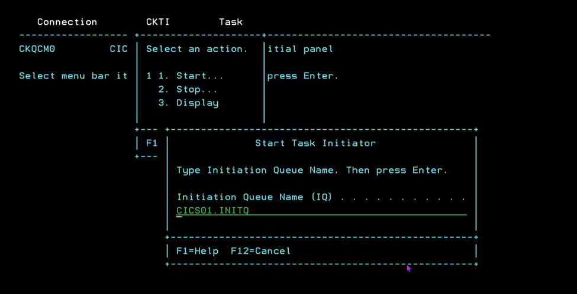
This step starts the
CKTItransaction, which controls the CICS trigger monitor.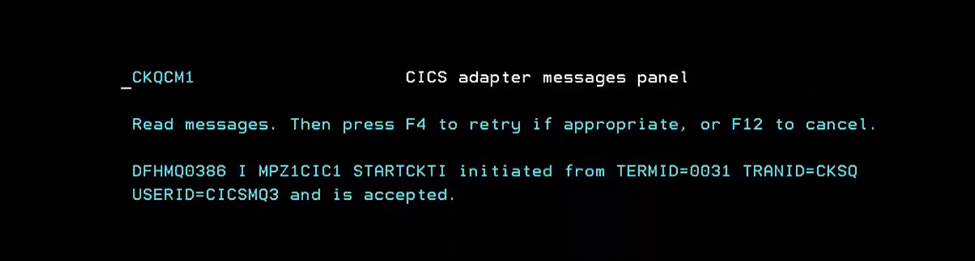
-
Press
F12to exit. If you display the connection orCKTIdefinition using the menu options, you should see the initiation queue associated correctly, similar to the examples below. You should also see thatCICS.INITQin MQ now has an open input count of1.Connection display:
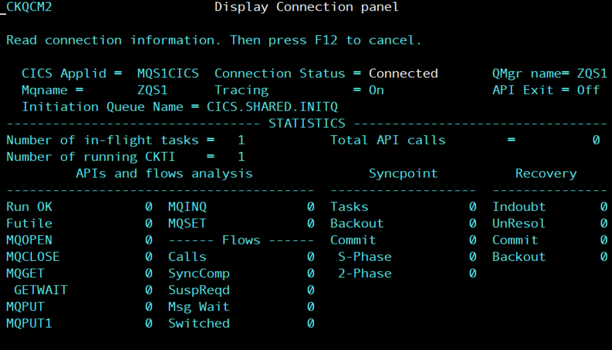
CKTI display:
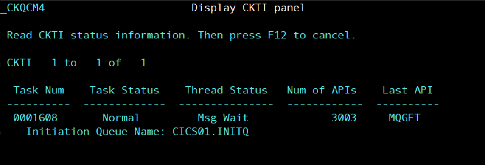
III. Testing the solution
-
At this point, the required MQ objects and CICS configuration should be in place, so you are ready to test the triggering flow.
-
Return to the MQ web console and navigate to the
QCPY.INPUTqueue. -
Put several test messages onto
QCPY.INPUT. Add at least five messages. The message payload can contain any text. -
Now put a control message onto
QCPY.CONTROL. The message must be in the following format:
2,QCPY.INPUT,QCPY.OUTPUT
In this example:
- 2 is the number of messages to copy
- QCPY.INPUT is the source queue
- QCPY.OUTPUT is the target queue
This message requests that MQ copy two messages from QCPY.INPUT to QCPY.OUTPUT.
-
After submitting the control message, verify the result by checking the queue depths of
QCPY.INPUTandQCPY.OUTPUT.QCPY.INPUTshould have two fewer messages, andQCPY.OUTPUTshould have two more messages. -
Next, look at the messages on
QCPY.STATUS. You should see a status message confirming thatQCPYcompleted successfully, for example:
MESSAGES COPIED = 000002
FROM QUEUE = QCPY.INPUT
TO QUEUE = QCPY.OUTPUT
- Congratulations. You have successfully used a CICS application with MQ triggering. In this lab, you created the necessary MQ objects, configured the MQ-to-CICS connection, and verified that triggered processing copied messages from a source queue to a target queue.
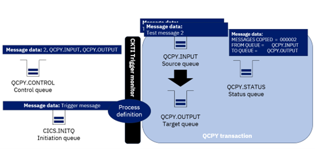
Troubleshooting
If the test does not work as expected, check the following:
QCPY.PROCESSexists and identifies theQCPYCICS transactionQCPY.CONTROLis defined for triggering and references the correct initiation queue and processCICS.INITQexists on the correct queue managerCKTIis active in CICS- The MQ-CICS connection is active
- The
QCOPYprogram andQCPYtransaction are installed in CICS - The control message format is correct
- The queue manager name used in CICS matches the queue manager where the MQ objects were defined
Typical symptoms and causes:
- No trigger occurs: CKTI is not active, the initiation queue is wrong, or QCPY.CONTROL is not defined as a triggered queue
- Trigger message is generated but nothing runs: the CICS connection or QCPY transaction definition is missing
- Messages do not move: the control message format is wrong or the source or target queue names are incorrect
- CICS.INITQ open input count is 0: CICS is not monitoring the initiation queue